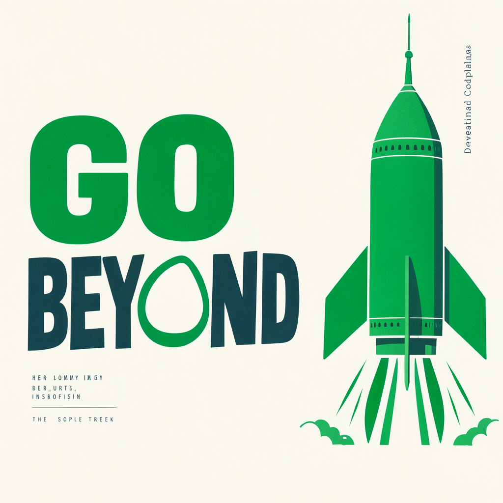
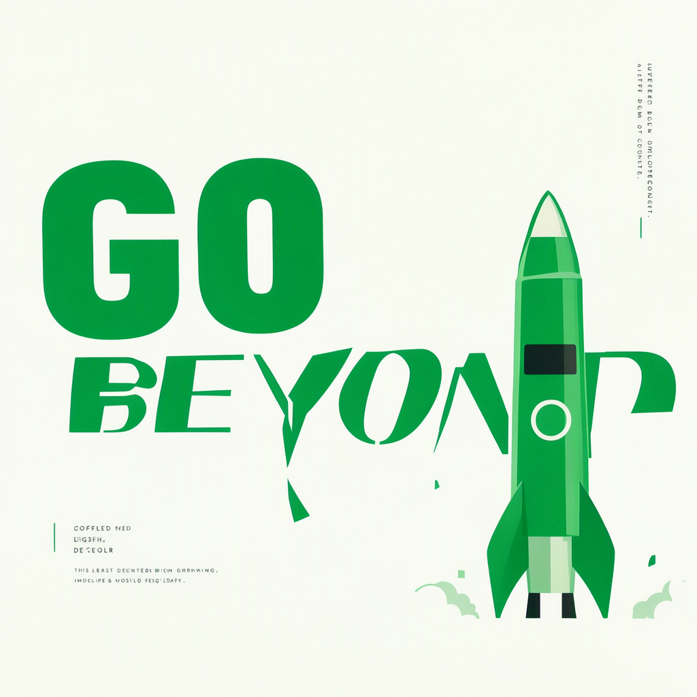

Requested text: GO BEYOND. Seed 1721083345. In the FP8 image, the rocket covers much of the final D. The rocket itself is recognizable; the lettering is distorted. Original PNGs are shown unchanged.


One of 16 candidate images failed the blinded recognizability review; all 16 baseline images passed. The original failure is retained. No independent fresh-seed FP8 holdout was completed.